DTD Source Page Editor
Prerequisites:
- File ->New ->Example... ->Examples ->Editing
and validating XML files
- Press the Finish button
Steps:
- Open XMLExamples/Invoice/Invoice.dtd with DTD Source page
editor.
- Position the mouse somewhere in the content area of the
Source page and press mouse button 2.
- Verify the following items in the context menu that
appears (including cascading menus), which is shown below:
- Undo/Undo Text Change
- Cut
- Paste
- Add to Snippets...
- Properties
Note: Other menu items are covered by IES.
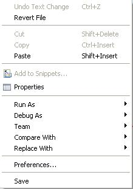
- Select Edit from the menu bar.
- Verify the following menu items (including cascading
menus):
- Undo Text Change
- Redo Text Change
- Expand Selection To (and submenu)
Note: Translations for other menu items are covered by IES.

- Select Source from the menu bar.
- Verify all menu items.

- In the Outline view, expand all nodes and selecting each
one, verify context menu and property sheets in the Properties
view.
Some of the context menu items include:
- Add Element
- Add Entity
- Add Notation
- Add Parameter Entity Reference
- Add Comment
- Add Attribute List
- Add Attribute
- Add Element to Content Model
- Add Group to Content Model
- Delete
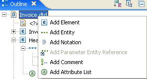
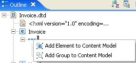
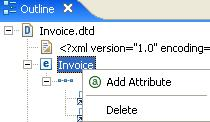
Some of the propery sheets include:
- Element
- Sequence
- Element Reference
- Attribute
- Attribute List
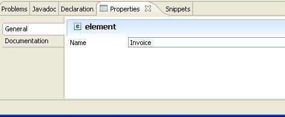
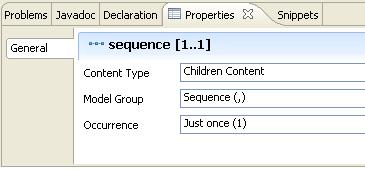
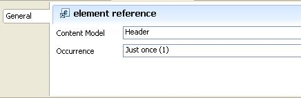
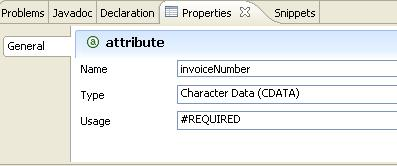
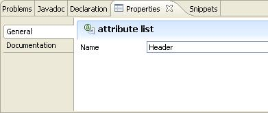
- In the Outline view, hover over toolbar items and verify:
- Sort items alphabetically
- Group items logically
- Collapse All
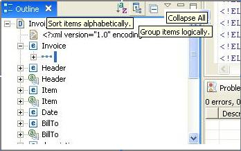
- Click on Group items logically and verify the group names
in the Outline view.
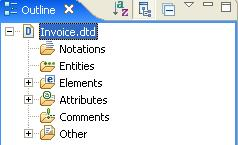
- Click on the Outline view Menu (the triangle button) and
verify Link with Editor.

- Close the editor, discarding any changes.